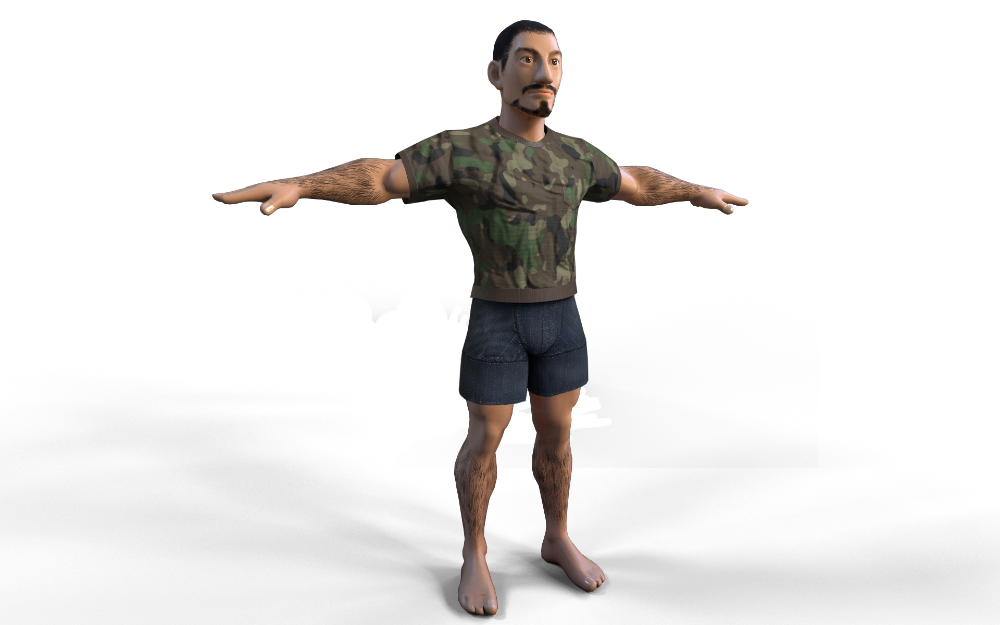
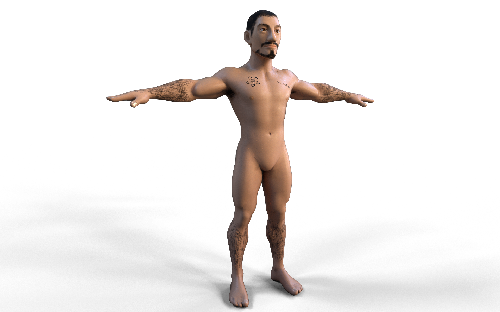
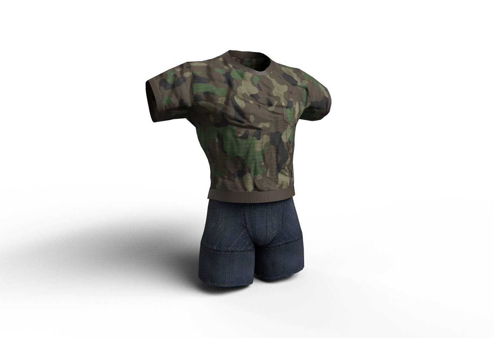
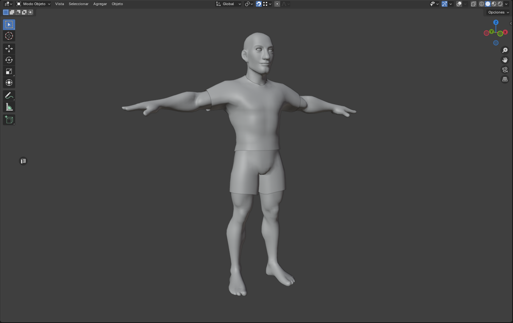
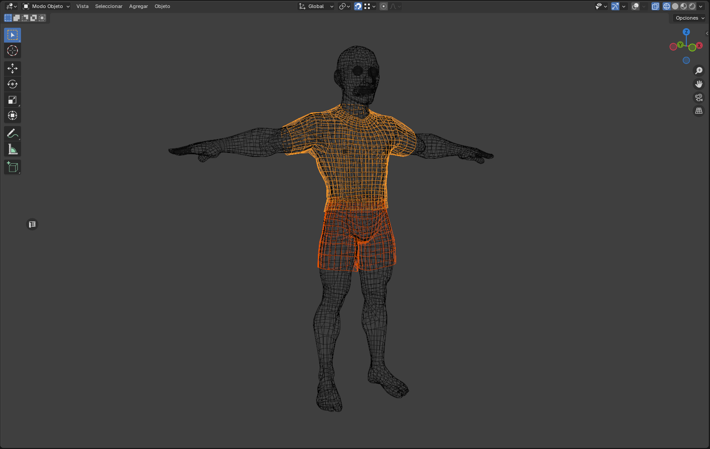
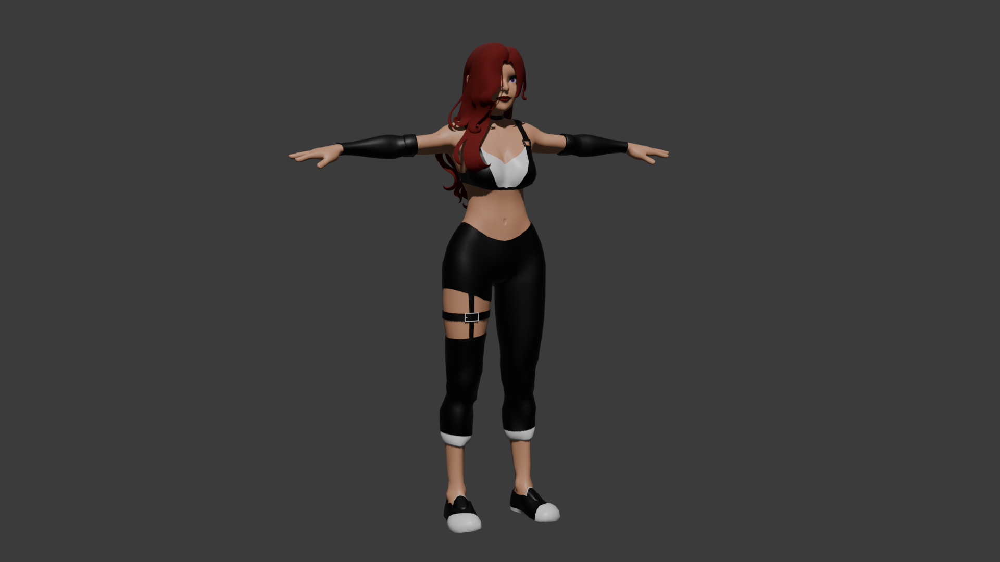
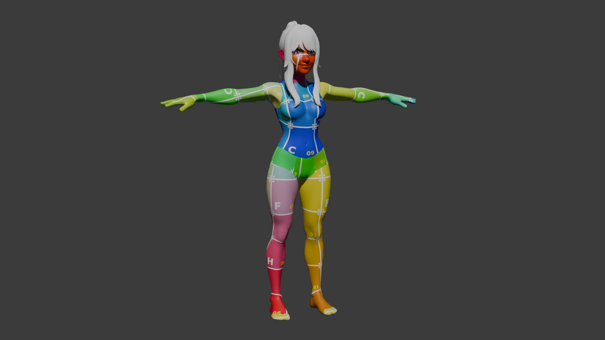
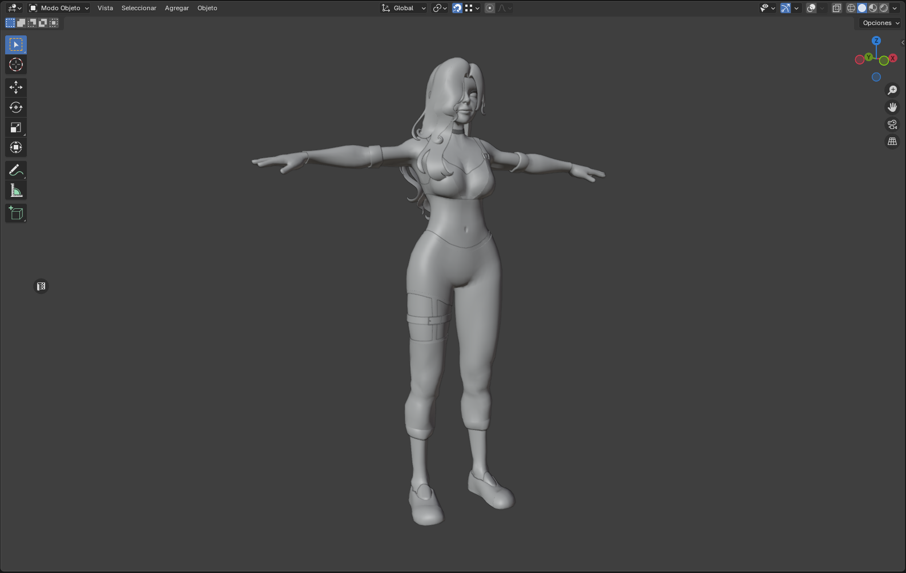
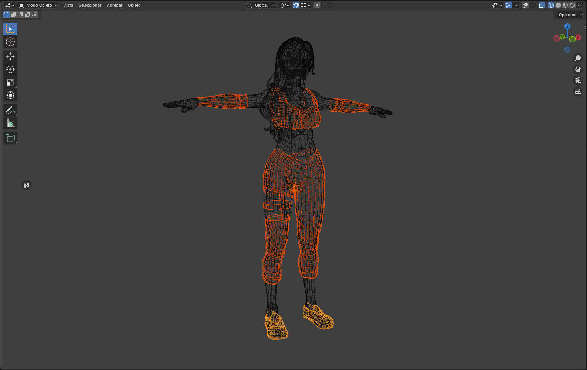

Survivors
Characters created for 3rd person game with customizable clothes and body features. Rigged and fully textured.
Male triangle count: 19.034
Female triangle count: 27.271
Blender
Substance Painter